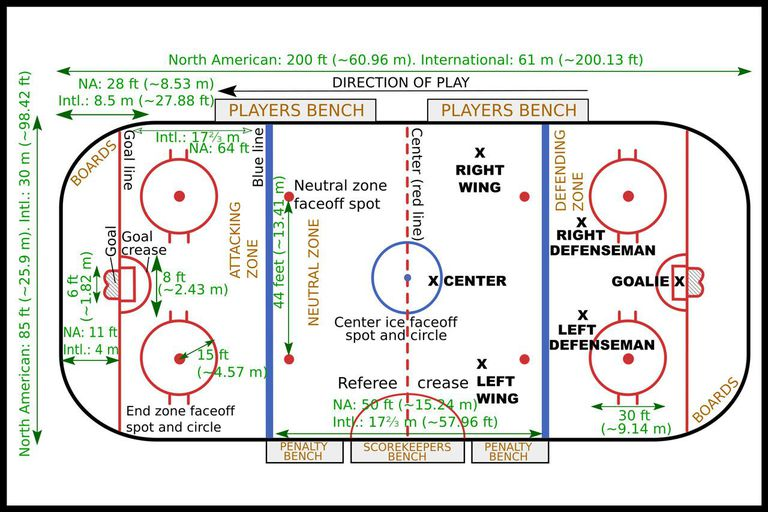
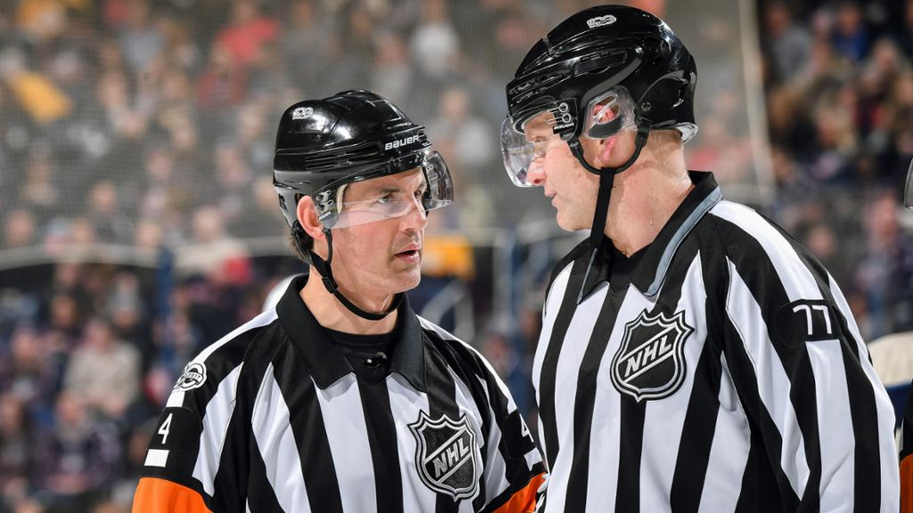

Play of the Game
| Home |
| History of Hockey |
| Leagues |
| Play of the Game |
| Map of NHL Stadiums |
| References |
| Contact me |
| Content Search |

NHL hockey is typically played on a standard-size rink shaped like a round-cornered rectangle that is 200 feet (61 metres) long and 85 feet (26 metres) wide. International rinks are usually 184–200 feet by 85–98 feet, and U.S. college rinks are typically 200 feet by 100 feet. The goal cage is 4 feet (1.2 metres) high and 6 feet (1.8 metres) wide. Any shot that completely clears the goal line, a 2-inch- (5-cm-) wide stripe on the ice across the front of the cage, is a goal. In front of the goal is the crease, a semicircular area that corresponds to a circle with a 6-foot radius, demarcated by a red line. When the goalie is in the crease, no attacking player may enter unless the puck is there as well; if the goalie is not in the crease, however, anyone may enter. The blue lines that divide the ice into three zones are 60 feet (18 metres) out from the goal line and are painted across the width of the ice. The area between the blue lines is called the neutral zone. This zone is bisected by the red centre line.
Virtually all equipment—for children, amateurs, or professionals—is the same. Made of vulcanized rubber, the puck is 1 inch (2.5 cm) thick and 3 inches (7.6 cm) in diameter and weighs 5.5 to 6 ounces (156 to 170 grams). Hockey sticks, once made from wood, are now formed from a variety of materials. Rules are enforced limiting the size of the stick and the curvature of its blade. Forwards and defensemen wear the same type of skates, but goaltenders have flatter blades because they need more balance and are stationary for longer periods. The shoes of goaltenders’ skates are fitted with rubber protection for the toes. Players wear padding under their uniforms to protect legs, shoulders, and arms. Since 1979–80 all players entering the NHL must wear helmets; helmets and face masks are mandatory in National Collegiate Athletic Association (NCAA) and IIHF play. The goaltender wears a specially designed mask (often molded to the contours of his face).
Over his uniform a goalie wears extra equipment. Pads up to 11 inches (25.4 cm) wide protect him from the tips of his skates to above his knees. They not only afford protection but also aid in blocking shots. On his free hand the goalie wears a glove similar to a first baseman’s baseball mitt, with a wide webbing that enables him to catch the puck. The stick hand is encased in a glove with a wide backing that protects his arm. The goalie’s stick has a wider shaft and blade than those of the other players. Fully dressed, goaltenders carry up to 40 pounds (18 kg) of equipment.

The modern game on every level—amateur, collegiate, international, and professional—has been influenced largely by the NHL.
Checking—body contact to take an opponent out of play—is permitted anywhere on the ice. In most leagues, including the NHL, players may not make or take a pass that has traveled across the two blue lines; if this occurs, the play is ruled offside. A face-off, in which an official drops the puck between opposing players, follows the infraction. Face-offs are held at the point of the infraction. Players who precede the puck into the attacking zone also are ruled offside, and a face-off is held at a face-off spot near the attacking blue line. A face-off also begins each period and is used as well after a goal and after any stoppage of play.
The goalie rarely leaves his goal area. The usual alignments of the other five players are three forwards—the centre, a left wing, and a right wing—and two defensemen—a left defenseman and a right defenseman.
A player may handle the puck as often or as long as he likes, so long as he does not close his glove on the puck or touch the puck with a stick that is higher than shoulder level. A player may not pass the puck with his open hand. The goalie, however, is generally not subject to these restrictions.
The game is divided into three periods of 20 minutes playing time each, with a 15-minute intermission between periods. Hockey games may end in a tie unless the rules stipulate an overtime period to serve as a tiebreaker. In the case of a tie in college hockey, one 10-minute sudden-death overtime period is played in regular season play. NHL teams play a five-minute sudden-death overtime period, followed by a shoot-out if the game remains tied. During the play-offs, college hockey has 10-minute overtime periods until there is a winner, while the NHL has the same system with 20-minute periods. There is generally no overtime period in international hockey; however, Olympic competition since 1994 has had a 10-minute sudden-death period, followed by a shootout if needed.
In organized ice hockey a victory is worth two points in the standings. A tie is worth one point, and the NHL, which has no ties, awards a point to a team that loses in overtime. A goal counts as a point for the team, but individual points may be awarded to as many as three players for one goal. One point goes to the player who scored the goal, and a point is awarded for an assist to each of the last two of the scorer’s teammates who touched the puck, providing that the opposition did not handle the puck in the interim.
Ice hockey is the only major sport in which substitutions are permitted while the game is in play. The game is so fast and so demanding that forwards generally skate only 90 seconds at a time. Defensemen usually stay on the ice for a slightly longer period of time.
Because of the speed and contact, there are many infractions, not all of them having to do with "hitting" penalties. Play is stopped for an offside and for the infraction called icing, which occurs when a team shoots the puck out of its zone past the other team’s goal line. Icing is not called against a team when it is shorthanded; if the teams are evenhanded or if the offending team has more players than the opposing team, the puck is returned to the defensive zone of the team that iced it for the face-off. No player, however, may delay the game by intentionally shooting the puck out of the rink or by shifting the goalposts.
Minor penalties are most commonly assessed for excessive use of the body or equipment to impede the opposition. For a minor infraction the offending player must remain in the penalty box at the side of the rink for two minutes while his team plays shorthanded. This man-advantage situation is called a power play. If the opponents score at any time during the penalty period, the penalized player may return to the ice. Penalties incurred by the goalie are served by a teammate. A major penalty for violent play results in the loss of a player for five minutes or for the remainder of the game. If major penalties are incurred simultaneously by both teams, substitutions are made and there is no shorthanded play. A game misconduct penalty for abusing an official results in the loss of a player for 10 minutes; however, a substitution is allowed, and the team does not play shorthanded.
There are three common types of shots in hockey: the slap shot, the wrist shot, and the backhander. The slap shot has been timed at more than 100 miles an hour (160 km an hour). The slap shot differs from the wrist shot in that the player brings his stick back until it is nearly perpendicular with the ice and then brings the stick down in an arc, swatting the puck as he follows through. It is not as accurate as the wrist shot, in which the player puts his stick on the ice near the puck and without a windup snaps his wrist to fire off a shot. The backhander is taken when the puck goes to the other side of the stick from which the player normally shoots. If he is a right-handed shooter, for example, he takes the backhander from his left side. It is taken when there is not enough time to shift the puck to his normal shooting position. The backhander generally is not as hard or as accurate as the wrist shot, but it has the advantage of being taken quickly.